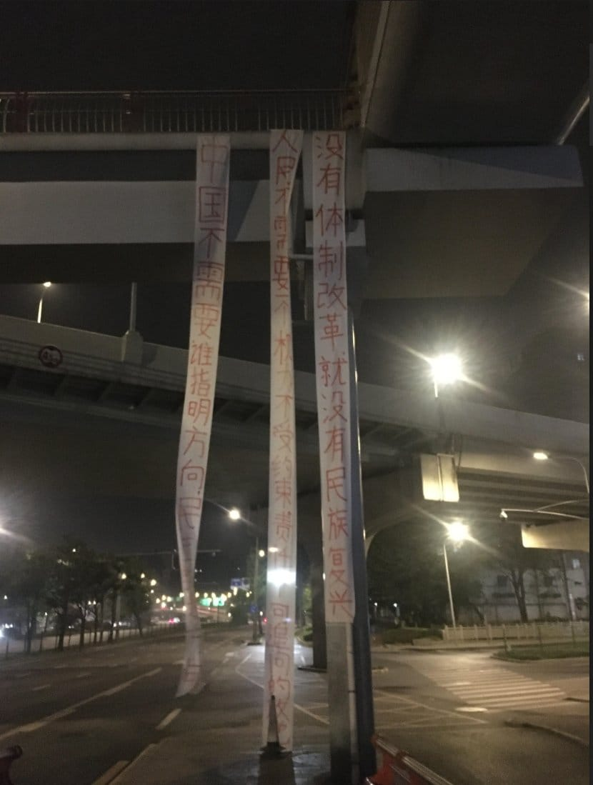

世界苦茶04月15日新闻 | 43条 | 习近平抵达越南访问

习近平抵达越南访问 | Ketty Perry与5位女性一起太空旅行 | Meta面对反垄断诉讼 | 上周国家队护盘金额达1700亿美元 | 略萨去世
透明茶室
苦茶数据
美元兑人民币：7.31（昨日7.31，前日7.28）
美元兑日元：143.15（昨日142.90，前日143.59）
上证指数：3256（昨日3267，前日3238）
标普500指数：5405（昨日5368，前日5268）
比特币：85134（昨日85290，前日84744）
布伦特原油：64.96（昨日64.44，前日64.76）
中国新闻
• 河北三河广告牌匾禁用红蓝黑底色引发关注： 河北省三河市燕郊一带商户近日接到城管上门通知，要求红色、蓝色、黑色的商铺招牌被要求更换颜色。以红色为主色调的蜜雪冰城招牌也换成了灰黑色。当地一商户提供视频显示，据称是三河市市监局负责人的男子2024年10月底在燕郊某市场内说，当地要打造“学院风、国际化”，“不允许有红色底色的牌匾，红色代表火，比较火热，人到里面比较亢奋，所以咱们去红去蓝”。该说法与《三河市城市规划建设管理导则》一致。该商户还表示：“起初，城管部门的工作人员进入市场，让大家把红色的广告牌匾更换掉，大家都不听。后来，市场监管部门便介入了，要求商户们换广告牌，大家不敢不听。”廊坊市联合调查组4月15日发布情况通报称，经初步核查，媒体反映的主要问题基本属实。目前已对三河市委主要负责人免职处理，并责成三河市委、市政府深刻反思，汲取教训，全面整改。下一步，将根据调查结果，对相关责任人依规依纪依法追责问责。
• 海南加快商业航天建设 ：中国海南省官方发布文件，计划加快商业航天发射能力建设，打造火箭回收及可重复使用创新平台。据海南省政府信息公开网站，中共海南省委办公厅、海南省政府办公厅星期一发布《关于打造新质生产力重要实践地的意见》。《意见》指出，要围绕“向种图强”“向海图强”“向天图强”“向绿图强”“向数图强”，积极营造开放、创新、充满活力的发展环境，因地制宜发展新质生产力。
• 昆明商铺火灾致8死 ：中国云南省昆明市官方通报，当地一家商铺起火，造成八人死亡。综合中新社和澎湃新闻报道，昆明市呈贡区应急管理局上星期六发布情况通报，呈贡区乌龙街道一商铺当天凌晨2时许起火，消防、公安、应急、卫健等部门第一时间赶赴现场开展救援。通报称，凌晨2时50分许，现场明火扑灭，救援工作结束。起火造成八人死亡。目前起火原因调查和善后处置工作正有序开展。
• 台抗议柬遣送诈骗犯至大陆 ：台湾外交部星期一指柬埔寨将涉及电信诈骗案的台湾人遣送中国大陆，并对此表达严正抗议与关切。台湾外交部在官网说，柬埔寨政府破获电信诈骗据点，逮捕计180名台湾人。柬埔寨并分别于4月13日晚间及14日凌晨配合中国大陆要求，将三批包含中国大陆及台湾犯嫌、近190人全数遣送中国大陆，而且柬埔寨在中国大陆施压下未提供台湾人名单及具体遣送人数。台湾外交部除持续促请柬埔寨尽速提供外，更对此表示严正关切与抗议。《柬中时报》早前引述消息人士报道，柬埔寨定于星期天遣返约500名中国大陆和台湾电诈嫌疑人。这则报道已被删除，但可在谷歌搜索平台看到这则报道的记录。
• 中方反制美涉藏签证限制 ：针对美国表明对主管外国人入藏的中国官员施加额外签证限制，中国外交部发言人回应称，将对在涉藏问题表现恶劣的美方人员实施签证限制。中国外交部发言人林剑星期一在例行记者会上受询时强调，西藏事务纯属中国内政，美国借涉藏问题对中方官员滥施签证限制，严重违反国际法和国际关系基本准则。他说，依据《中华人民共和国对外关系法》，《中华人民共和国反外国制裁法》有关规定，中方决定对在涉藏问题上表现恶劣的美方人员对等采取签证限制措施。
• 中使馆提醒防日本大地震 ：中国驻日本大使馆星期一提及日本官方公布的大地震风险评估报告，并提醒在日本的中国公民注意防范地震灾害。日本地震研究委员会1月中旬对海底区域南海海槽的大地震做出新评估，认为30年内发生的概率从去年预测的70%至80%修正为80%。综合日本放送协会和共同社报道，据预测，未来30年日本发生南海海槽大地震的概率为80%左右。日本政府工作组的领头人、名古屋大学名誉教授福和伸夫也在3月底向防灾担当大臣坂井学提交了灾害风险评估等的报告。
• 中国养老人才短缺问题严峻 ：中国民政部表示，中国当前存在养老服务技能人才总量不足、高层次人才短缺的问题。综合澎湃新闻、中国新闻网报道，中国民政部星期一召开季度新闻发布会。中国民政部养老服务司副司长李永新在发布会上表示，以养老护理员为重点的养老服务技能人才，是养老服务的重要提供者，是养老服务体系建设的重要支撑保障。中国国老年人口基数大，老龄化速度快，特别是随着高龄、失能等老年人数量增加，对养老服务人才数量需求大、品质要求高。
• 习近平抵达越南发表讲话 ：中国国家主席习近平抵达越南，并发表书面讲话。习近平强调“越中情谊深、同志加兄弟”的友谊，并表示期待和越南领导人就中越两党两国关系的全局性、战略性、方向性问题以及共同关心的国际和地区问题深入交换意见。据新华社，习近平星期一抵达越南，在河内内排国际机场发表书面讲话。习近平说，应越共中央总书记苏林和越南国家主席梁强邀请，开启对越南的第四次国事访问。“在抵达河内之际，我谨代表中国共产党、中国政府和中国人民，向兄弟的越南共产党、越南政府和越南人民致以诚挚问候和良好祝愿。”习近平表示，中越两国要增强战略定力，共同反对单边霸凌行径，维护全球自由贸易体制和产业链供应链稳定；中越要增进更高水平的战略互信，“两党两国领导人要像走亲戚一样常来往、多沟通”。会谈后，双方还见证中越双方签署的45份双边合作文本展示。
• 美官员称无与习近平会谈计划 ：美国官员称，总统特朗普目前没有计划针对关税课题，与中国国家主席习近平举行会谈。据路透社报道，美国贸易代表格里尔星期天在美国哥伦比亚广播公司节目上，除了称特朗普目前没有计划针对关税课题与习近平举行会谈之外，也指中国以加征关税作为针对美国关税措施的回应，制造了贸易摩擦。中美两国经过几轮报复式加征关税后，中国国务院关税税则委员会上星期五公告，对美国商品加征关税从84%增至125%，并称如果美国继续对华商品加征关税将沦为笑话，中国将“不予理会”。
• 马国为习近平访马演练反恐 ：中国国家主席习近平即将率团访问马来西亚，马国警方特别为此举行高级别反恐演习。据《东方日报》报道，吉隆坡武吉阿曼警察总部内部安全及公共秩序部总监阿兹米星期六率领警队，在吉隆坡国际机场的大红花贵宾厅大厦入口展开大型反恐演习。警方为确保中国代表团出行安全，决定采用较高级别的反恐措施布防，包括出动可干扰多种无线电波及电话信号的反恐车，以随时阻截遥控炸弹或无人机的信号。
亚太印太新闻
• 安华要求缅甸延长停火 ：马来西亚首相安华表示，作为亚细安轮值主席国，为确保受地震重创的缅甸人民继续获得人道主义援助，他将要求缅甸军政府延长停火。《星报》报道，安华在星期一的财政部每月例行会议上说，他将在星期四到曼谷与获他委任为亚细安事务非正式顾问的泰国前首相达信会谈，到时他还会在曼谷与缅甸军政府领导人敏昂莱会面，并要求他延长停火。为开展灾后重建工作，缅甸军政府于4月2日至22日暂停对武装反对派的军事行动。
• 尹锡悦首次出庭否认指控 ：韩国前总统尹锡悦星期一上午出席涉嫌带头发动内乱刑案的首次庭审，亲口否认检方的指控。韩联社报道，首尔中央地方法院刑事合议25庭星期一开庭审理该案，检方和尹锡悦方面在庭上陈述了各自立场。尹锡悦亲自辩驳检方的指控，并主张紧急戒严令在短短几小时后就被解除，检方将其认定为内乱罪，不符合法理。检方阐述公诉意见时指出，尹锡悦以扰乱宪政秩序为目的决定发起暴动，还以妨碍宪法机构行使职权、使宪法制度丧失功能为目的宣布实施戒严，因此检方依据《刑法》第87条中的“内乱罪”规定，对他提起公诉。
• 朱立伦促彻查民进党间谍案 ：台湾在野的国民党主席朱立伦在一场政策说明会前受访时呼吁，执政的民进党彻查中国大陆间谍案渗透该党的情况，并希望绿营不要为了钱出卖台湾。综合ETtoday新闻云和台湾《联合报》报道，朱立伦星期天在基隆主持国民党“还钱于民”政策说明会前受访时说，民进党每天抹红对手，但不要忘了，执政的是他们。民进党真的腐化了，为了利益、为了钱，竟然出卖台湾当大陆间谍，而且还在高层身边发生。他也感叹，今年全世界在拼经济、拼贸易等，民进党却在搞大罢免，民进党就是台湾“恶霸”。
• 李在明居韩总统民调首位 ：韩国民调机构Realmeter星期一发布的一项民调结果显示，在新一届总统热门人选中，共同民主党前党首李在明支持率达48.8%，名列第一。韩联社报道，Realmeter受网媒《能源经济新闻》委托于4月9日至11日，面向全国18岁以上的1506名选民进行新一届总统热门人选支持率的调查。结果显示，李在明以48.8%的支持率领跑。前雇佣劳动部长官金文洙为10.9%，排名第二，较上一次调查下降5.4个百分点。代行总统职权的总理韩悳洙为8.6%。
科技新闻
• 凯蒂佩里搭全女性火箭升空 ：美国乐坛天后凯蒂佩里与其他五名女性，一同乘坐的火箭已升空，这是60多年来首次出现全女性飞行机组。法新社报道，亚马逊创办人贝佐斯旗下的太空探索技术公司“蓝色起源”星期一的直播画面显示，凯蒂佩里和其他五名女性于上午8时30分乘坐“新谢泼德”火箭从得克萨斯州西部升空。
• 苹果加速转移供应链至印度 ：美国苹果手机的供应链加速从中国转移，截至今年3月在印度组装总计220亿美元的iPhone手机，产量同比增加近六成。彭博社星期天引述匿名知情人士报道，总部位于加利福尼亚州库比蒂诺的美国苹果公司，目前在印度生产20%的iPhone手机，即五分之一产自此南亚国家。上述的美元价值是这些设备的预估出厂价格，而非标出的零售价。上述增长表明，iPhone制造商及其供应商正加快从中国向印度转移的步伐，这一转移始于冠病疫情期间，当时的严格封控措施重挫苹果最大出产地中国的产量。印度制造的大部分iPhone手机都在富士康科技集团位于印度南部的工厂组装。塔塔集团的电子制造部门是关键供应商，该集团此前收购了纬创资通股份有限公司，并控制了和硕联合科技的业务。
• 谷歌发布DolphinGemma模型 ：几十年来，理解海豚的咔哒声、哨声和脉冲音一直是科学前沿。今天，在美国国家海豚日之际，谷歌与佐治亚理工学院的研究人员以及野生海豚项目的实地研究团队合作，宣布 DolphinGemma 取得了进展：这是一个基础人工智能模型，经过训练可以学习海豚发声的结构，并生成新颖的类似海豚的声音序列。这种方法在跨物种交流的探索中，突破了人工智能的界限，也拓展了与海洋世界的潜在联系。虽然 DolphinGemma 仅接受了大西洋斑点海豚声音的训练，但谷歌表示，应该可以针对其他鲸类物种对其进行微调。
• Meta将面临反垄断审判 ：脸书母公司Meta将于周一在华盛顿面临一场高风险审判。指控其通过斥资数十亿美元收购Instagram和WhatsApp构建了一个非法的社交媒体垄断地位，美国反垄断执法试图要求法院撤销这些交易。美国联邦贸易委员会称，这两笔十多年前的收购交易旨在消除那些可能威胁脸书作为用户首选社交平台地位的新兴竞争对手。该机构在2020年提起了这起诉讼。Meta首席法务官纽斯特德在周日发布博文称，这桩案件缺乏说服力，并且会打击科技行业投资。“FTC正试图拆分一家伟大的美国公司，而与此同时美国政府却试图拯救中国拥有的TikTok，这简直荒谬。”
• 英伟达扩产美国AI芯片 ：英伟达表示，作为将部分生产转移至美国计划的一部分，该公司已在亚利桑那州和得克萨斯州委托超过 100万平方英尺的制造空间用于建造和测试AI芯片。这家芯片制造商表示，英伟达Blackwell芯片已开始在台积电位于亚利桑那州凤凰城的芯片厂生产，并正在得克萨斯州与休斯顿的富士康及达拉斯的纬创合作建设 “超级计算机” 制造厂。该公司补充称，在亚利桑那州，英伟达正与安靠科技和矽品合作开展封装及测试业务。根据英伟达的说法，亚利桑那州和得克萨斯州工厂的大规模生产预计将在未来12月至15个月内扩大。未来四年内，该公司目标是在美国生产价值高达5000亿美元的AI基础设施。
财经新闻
• 国家队护盘资金创新高 ：中国“国家队”资金全力护盘稳定A股市场以应对美国特朗普政府的关税攻势，中国境内交易所交易基金上周录得创纪录的资金流入。彭博汇编数据显示，中国在岸股票ETF上个星期净流入近240亿美元，打破了去年10月创下的约230亿美元纪录，其中大部分资金流入了市场普遍认为是“国家队”偏好的ETF。这波资金涌入显示出中国当局在股市受贸易战冲击走低之际迅速出手干预的迫切性。中国央行上周表示，将向被视为“平准基金”的中央汇金提供充足流动性。
• 印尼部长团赴美谈关税 ：印度尼西亚高级部长将前往华盛顿，向白宫方面提出大幅增加美国进口产品的提议和投资方案，争取避免美方征收高额关税。路透社报道，印尼经济事务统筹部长艾尔朗加、财政部长慕燕妮和外交部长苏吉奥诺将率领代表团，将在4月16日至23日到美国进行谈判。艾尔朗加星期一说，代表团将与美国政府高级官员举行会谈，包括财政部长贝森特、商务部长卢特尼克和国务卿鲁比奥。
• 阿蓬特家族拟收购李嘉诚港口 ：意大利亿万富豪詹朱利·阿蓬特的家族企业据报正成为寻求从香港富豪李嘉诚的长和集团手中收购43个港口的领头财团。 彭博社星期一引述匿名知情人士报道，出售交易完成后，阿蓬特家族运营的码头投资公将成为所有港口的唯一拥有者，美国投资公司贝莱德牵头的财团只掌控巴拿马运河两端港口的经营权。知情人士称，贝莱德的子公司全球基础建设合伙公司将拥有巴拿马运河沿两端港口的51%权益，余下49%权益归TiL所有。巴拿马港口约占交易总值的4%。
• 泰国部长团将赴美谈关税 ：泰国政府发言人说，泰国财政部长和商务部长将率领代表团前往美国，与美国政府官员会面，并推动美国解除计划中的高额关税。路透社报道，泰国发言人集拉育星期一说，由财政部长比猜率领的代表团将于星期四前往美国，先与私营部门团体会面。商务部长比猜稍后也将加入。集拉育说，泰国代表团预计将于4月21日与美国政府代表会面。泰国的战略将重点关注美泰两国有共同利益的行业，例如宠物食品、开放市场以及增加美国进口。
• DHL CEO批评关税反复 ：物流业巨头敦豪集团首席执行官迈耶指出，企业和制造商已开始对特朗普反复无常的关税举措感到疲惫。迈耶星期一在新加坡接受彭博社访问时指出，企业和个人已对关税政策不断改变感到“有些厌倦”。他说：“即便是作出某个宣布，但他们不知道，两天后是否又会再次改变……确实看到制造业和分销业的决策者已感到有些疲惫。”
• 港官促中概股回流香港 ：香港特区官员公布，已指示香港证监会和香港交易所做好准备，必须让香港成为海外上市的中概股希望回流时的首选上市地后，港交所股价星期一大涨超过7%。香港财政司司长陈茂波星期天在博客写道，香港正积极吸纳全球各地优质发行人赴港上市，并已建立便利已在海外上市的企业在港进行双重上市或第二上市的监管框架。陈茂波说：“针对全球最新变化，我已指示证监会和港交所做好准备，若在海外上市的中概股希望回流，必须让香港成为它们首选的上市地。”
• 高盛下调中资股目标价 ：高盛集团策略师本月第二次下调主要中国股指的目标价，理由是中美贸易紧张局势加剧。据彭博社，高盛研究部的首席中国股票策略师刘劲津及团队在星期一的一份报告中指出，中美贸易紧张局势已飙升至前所未有的水平，引发了对全球经济衰退的担忧。报告说，中美贸易紧张局势也增加了两国在资本市场、科技和地缘政治方面等战略领域的脱钩风险。
• 特朗普将公布半导体关税 ：美国总统特朗普说，他将在接下来一个星期宣布对进口半导体的关税税率，并对其中一些公司采取灵活安排。路透社，特朗普星期天从西棕榈滩海湖庄园飞回华盛顿时，在空军一号上对记者说：“我们要让许多公司简化流程，因为我们希望在自己国家生产晶片、半导体和其他产品。”特朗普拒绝透露智能手机等产品是否仍可能获得关税豁免，但他说：“我们必须保持灵活。不应该太僵化。”
• 中国一季度出口增长6.9% ：中国一季度货物贸易进出口10.3万亿元人民币，增长1.3%。其中出口总额6.13万亿元，增长6.9%。中国星期一公布一季度进出口贸易数据，显示进出口增速逐月回升，1月份进出口下降2.2%，2月份基本持平，3月份增长6%。中国海关总署表示，在外部困难挑战增多的情况下，各地各部门和广大外贸经营主体积极应对，推动一季度外贸进出口实现平稳开局。
• 石破茂表示，日不急于关税妥协 ：日本首相石破茂说，日本不打算做出重大让步，也不会急于在与美国进行的关税谈判中达成协议。路透社报道，石破茂星期一在议会上说：“我不认为我们应该为了迅速结束谈判而做出重大让步。”不过，他排除对美国进口产品征收反制关税的可能。
• 港府或干预港元升值 ：亚太地区其他央行为应对中美贸易战带来的货币贬值而苦恼之际，香港政策制定者正接近出手进行罕见干预，以遏制港元升势。根据香港自1983年起开始实施的联系汇率制度，港元兑美元的正常浮动区间为7.75至7.85。自上周以来，随着投资者押注贸易战将冲击美国经济，美元走软，港元一直徘徊在7.75至7.85美元的允许交易区间的强方水平边缘，即接近7.75。一旦升破上限，香港则需要出售港元，以抑制其升值，并维持港元与美元挂钩的联系汇率制度。
• 澳门维持现金分享政策 ：澳门宣布维持目前推行的现金分享措施，向澳门特区永久居民每人发放1万元澳门元，非永久居民每人发放6000元。澳门特区行政长官岑浩辉星期一在立法会发表《2025年财政年度施政报告》。据《澳门日报》，岑浩辉表示，在综合考虑社会经济发展状况，坚持审慎理财原则的前提下，将延续多项税务优惠及惠民措施。他说，在听取社会各界意见后，适时完善现金分享制度，将节省的开支用于增进民生福利和促进社区经济发展之上。
• 叶伦称特朗普政策削弱了对美国和美元资产的信任，美债安全性被质疑令人担忧 ：美国前财长叶伦表示，她担心特朗普总统的关税和其他政策正在削弱盟国对美国承诺的信任，一些投资者开始回避美国资产。叶伦告诉CNBC，上周美债收益率的飙升令人担忧，考虑到美债作为传统避险资产的地位，这种情况引发了对“全球金融体系基石安全性”的质疑。叶伦说："我认为我们并未看到市场流动性完全枯竭的功能失调，但一种表明对美国经济政策和基石金融资产安全性失去信心的趋势确实非常令人担忧。"
• 纽约联储3月调查显示短期通胀预期上升，消费者信心低落 ：纽约联储报告称，3月美国民众的短期通胀预期触及2023年秋季以来的最高水平，他们对个人财务状况和就业前景的评估恶化。纽约联储表示，在其最新消费者预期调查中，受访者预计一年后的通胀率为3.6%，高于 2月的3.1%，与2023年10月持平。三年期通胀预期稳定在3%，而五年期通胀预期则从2月的3%降至2.9%。
俄乌战争
• 泽连斯基邀特朗普访乌 ：乌克兰总统泽连斯基在哥伦比亚广播公司星期天播出的访谈中，呼吁美国总统特朗普访问乌克兰，以更好地了解俄罗斯入侵所造成的破坏。泽连斯基说，在特朗普做出任何决定，进行任何形式的谈判之前，应该先去看看乌克兰的人民、士兵、医院、教堂和死去的孩子，他才会明白俄罗斯总统普京做了什么。泽连斯基还说，他多次告诉特朗普不能信任普京，并指普京从未想要结束战争，这也是为何停火无法奏效的原因。
• 乌克兰苏梅遇袭致34死 ：俄罗斯4月14日声称其13日对乌克兰苏梅市的袭击主要针对乌克兰高级军官的集会，并指责乌克兰在市中心举行会议是利用平民作盾牌。但俄罗斯并未给出任何证据。乌克兰总统泽连斯基称，两发导弹分别击中了大学建筑和一个街道，再次呼吁对俄罗斯施加真正的压力。乌克兰官员称袭击造成至少34人死亡、119人受伤。欧洲多国领导人谴责这次袭击是战争罪。特朗普4月13日晚些时候表示，此次袭击是一件可怕的事，而他正试图停止战争。
其他新闻
• 哈佛大学拒绝了特朗普政府监管和改变招收师生政策的要求： 特朗普政府随之冻结了哈佛大学22亿美元的联邦资金拨款。哈佛大学校长艾伦·加伯在一封公开信中写道：“无论哪个政党执政，没有任何政府，可以决定私立大学能教什么，能录取谁和聘用谁，以及他们能在哪些领域研究和学习。” 加伯公开了美国政府的信件，并说政府的要求表明，特朗普政府的意图并非与反犹主义作斗争。要求包括：政府对哈佛招生和教师招聘进行审查；停止一切多元、平等和包容相关政策；向联邦政府汇报国际学生的校园违纪；接受满足政府要求的外部机构对师生观点进行审查，并招收不同观点的师生以满足“观点多样性”，如果院系无法满足审查要求，则停止招收师生，并将招收名额转让给其他院系等。以上政策需持续到2028年底。哥伦比亚大学是这轮特朗普政府对大学施压的第一个目标。上个月哥大接受整改后，联邦资金仍未恢复。
• 美国和萨尔瓦多政府无意将被错误驱逐至萨尔瓦多的阿夫雷戈·加西亚送回美国： 到访美国的萨尔瓦多总统纳伊布·布克尔4月14日表示，“当然”不会将阿夫雷戈·加西亚释放回美国领土，认为这个问题很“荒谬”，他“没有权力”把“恐怖分子”偷运回美国。美国司法部长帕姆·邦迪将最高法院要求政府“推动”带回阿夫雷戈·加西亚的命令解释为，在萨尔瓦多想要送回阿夫雷戈·加西亚时，美国将提供一架飞机。美国国土安全部14日在法庭文件中表示，该部无权强行将阿夫雷戈·加西亚带出来，因为他已处于外国主权国家的拘留之下。处理此案的法官现在在考虑是否迫使政府解释为什么其行为不应被认定为藐视法庭。与此同时，特朗普想扩大他的驱逐计划，他14日重申希望将一些暴力犯罪的美国公民驱逐到萨尔瓦多的监狱，并希望萨尔瓦多再建几个监狱。
• 特朗普称中国与越南的会谈可能意在“压榨”美国： 美国总统唐纳德·特朗普周一在讨论汽车及汽车零部件的关税和可能的豁免时表示，中国深化与越南经济联系的努力很可能是其“压榨”美国计划的一部分。“我不怪中国，也不怪越南，我不怪。我看到他们今天在开会。这很棒吧？这是一次很棒的会谈……就像在想，我们该如何压榨美国？”他在椭圆形办公室告诉记者，并声称他的前任乔·拜登在对华贸易中损失了“数万亿美元”。“我不怪习近平主席，”他在椭圆形办公室与萨尔瓦多总统纳伊布·布克尔举行的联合新闻发布会上说道。“我喜欢他。他也喜欢我。我的意思是，谁知道呢？”
• 哈马斯提议以人质换停火 ：哈马斯高级官员说，愿意在以色列承诺结束加沙战争的前提下，交换所有以方人质，以换取“认真的囚犯交换协议”。法新社报道，哈马斯高级成员努努星期一说：“我们准备释放所有以色列人质，前提是结束战争、以军撤出加沙地带，并允许人道援助物资进入。”不过，他指责以色列阻碍停火协议的推进。
• 美防长称或对伊朗动武 ：美国国防部长赫格塞斯星期天重申，美国希望通过外交途径阻止伊朗发展核武器，但如果失败，美国军方准备“深入推进，大干一场”。法新社报道，美国和伊朗外交官此前一天在阿曼开启了间接会谈，旨在化解西方国家对伊朗核计划的担忧。双方同意来临星期六继续磋商。赫格塞斯星期天接受哥伦比亚广播公司的《面向全国》节目访问时称，在阿曼进行的首次试探性接触“富有成效”，是一个“好的开始”。
• 美伊将在罗马会谈 ：美国和伊朗将在罗马举行第二次会谈，伊朗外交部长阿拉格齐也将访问俄罗斯，讨论近期在阿曼与美国举行的核谈判。法新社报道，伊朗外交部发言人巴卡伊星期一说，阿拉格齐将于本周末前往莫斯科。这次访问是“预先计划好的”，以讨论马斯喀特会谈的最新进展。阿拉格齐上星期六在阿曼首都马斯喀特，与美国中东事务特使维特科夫举行会谈。这是自2015年协议破裂以来，美伊最高级别的核谈判。伊朗和美国事后都称，会谈“富有建设性”。
• 秘鲁作家略萨逝世享年89岁 ：秘鲁著名作家、2010年诺贝尔文学奖得主马里奥·巴尔加斯·略萨在利马去世，享年89岁。新华社报道，略萨的儿子阿尔瓦罗·巴尔加斯·略萨星期天在社交媒体X说：“我们怀着沉痛的心情公布，我们的父亲今天在亲人的陪伴下安详地离开人世。”略萨1936年3月28日生于秘鲁南部阿雷基帕市一中产家庭，幼年父母离异，一岁的略萨与母亲移居玻利维亚，在那里度过幼年时光。他是秘鲁著名作家，创作过大量小说、剧本、散文随笔、诗、文学评论、政论杂文，也曾导演过舞台剧、电影和主持广播电视节目等。他曾获得诺贝尔文学奖、塞万提斯奖、阿斯图里亚斯王子奖等多项荣誉，代表作品有《城市与狗》《绿房子》《酒吧长谈》等。
• 推动USAID裁撤官员离职 ：美国官员披露，在解散美国国际开发署过程中发挥重要作用的一名特朗普政府官员已经离开国务院。特朗普政府开除几乎所有国际开发署的员工，亿万富豪马斯克领导的政府效率部则大砍政府开支，解雇整个联邦政府聘请的承包商，以打击他所谓的财政资金浪费。一名不愿具名的高级政府官员告诉路透社，“被派到国务院详尽审查美国对外援助所花的每一美元的马罗科，已经完成他的历史性任务，揭发纳税人的钱被严重滥用的情况”。